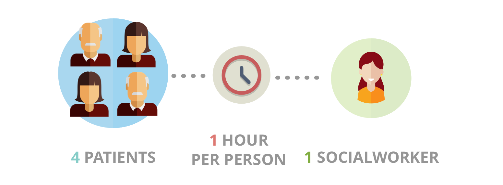

Contextual Inquiry
We conducted interviews and contextual inquiry with 4 low vision patients and 1 socialworkers who volunteers to assist the low vision group at Kellogg Eye Center. We identified that people with low vision have two common needs:

Reading Experience
The most mentioned problem is reading. When their vision starts to deteriorate, the first primary activity affected is reading. In addition, other reading-related activities, such as watching TV and driving vehicles, are also mentioned.
Social Engagement
People with low vision often feel frustrated when they fail to perform simple tasks. Most of these elder patients live independently and far away from their children. They have strong emotional and social needs.